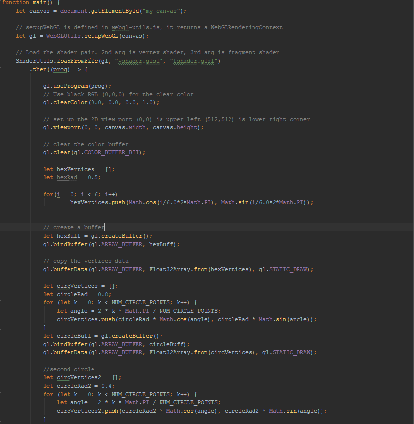
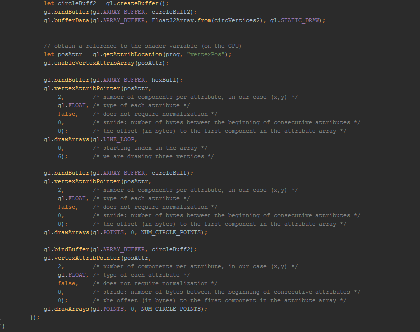

Hello World!
 gl.LINES: Draws a line between adjacent vertices
gl.LINE_STRIP: Draws lines between each adjacent vertices, but does not connect the first and last vertices
gl.LINE_LOOP: Draws lines between each adjacent vertices including the start and end vertices